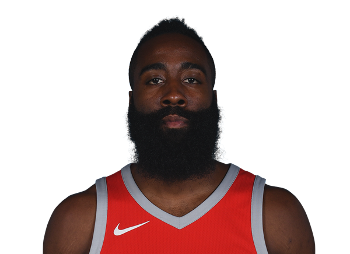
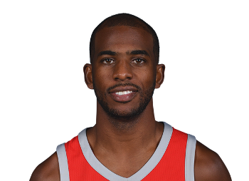

Team Info
2017/18 Jerseys
Location
Want to come visit us? Head to the Toyota Center, Houston and catch a game
Key Personnel
- Head Coach - Mike D'Antoni
- Associate Head Coach - Jeff Bzdelik
- Assistant Coach - Roy Rogers
- Assisstant Coach - Brett Gunning
- Assisstant Coach for Player Development - John Lucas
- Assisstant Coach for Player Development - Irving Roland
- Assisstant Coach for Player Performance - Keith Jones
Team Roster
| Name | Position | Number | Height | Age | College |
|---|---|---|---|---|---|
| Ryan Anderson | PF | 33 | 6'10" | 29 | California |
| Trevor Ariza | SF | 1 | 6'8" | 32 | UCLA |
| Tarik Black | PF | 28 | 6'9" | 26 | Kansas |
| Bobby Brown | PG | 6 | 6'2" | 33 | Cal State Fullerton |
| Clint Capela | C | 15 | 6'10" | 23 | N/A |
| Eric Gordon | SG | 10 | 6'4" | 28 | Indiana |
| James Harden | SG | 13 | 6'5" | 28 | Arizona State |
| Nene Hilario | C | 42 | 6'11" | 35 | N/A |
| Demetrius Jackson | PG | 2 | 6'1" | 23 | Notre Dame |
| Luc Mbah a Moute | PF | 12 | 6'8" | 31 | UCLA |
| Chinanu Onuaku | C | 21 | 6'10" | 21 | Arizona |
| Chris Paul | PG | 3 | 6'0" | 32 | Wake Forest |
| Zhou Qi | PF | 9 | 7'1" | 21 | N/A |
| PJ Tucker | SF | 4 | 6'6" | 32 | Texas |
| Briante Weber | PG | 0 | 6'2" | 24 | Virginia Commonwealth |
| Troy Williams | SF | 22 | 6'7" | 22 | Indiana |
Key Players
James Harden
Ever since James Harden made his move from the OKC Thunder to the Rockets he has become the outright star that they needed to take them to the next level. His dynamic playstyle, accurate shooting, creative passing and his signtature handles and footwork make him a nightmare for defenders and are just some of the reasons that he is a perennial MVP candidate and makes the Rockets a dangerous playoff threat. His stat line makes for interesting reading as he is a high volume scorer, capable of dropping 50 points at any time, but is also an accomplished playmaker, even leading the NBA in assissts during the 2016/17 Season. His awkward but effective driving style leads him to a high success rate when going to the basket and also help him to efficiently draw fouls and shoot a high number of free throws. Harden is the heart and soul of this Rockets team, and if they are to win the NBA championship in the near future he will have to show up at the highest level during the playoffs.
Chris Paul
If Harden is the heart and soul of the Rockets franchise, then Chris Paul is its on court brain. Despite being a shorter player than most even at the point guard position, Paul has stamped his mark in the NBA as the leagues premier point guard. While not necessarily the best overall player in his position, Paul is the player who most epitomises the definiition of the position. He is an accomplished pickpocket having led the league in steals on multiple occasions and is an even better playmaker with elite court vision, masterful handles and the near perfection of the passing fundamentals as well as the flashy aspects. Paul is one of a select few players to average above 10 assists per game in a season and is almost averaging that mark for his entire career. He is no slouch on the offensive end of play either with an accurate stroke from either the mid or three point range. The addition of Paul to this Rockets team makes this amongst the biggest threats to the Warriors for the NBA title and could make this Rockets team the most dangerous they have been since the glory days of Hakeem 'The Dream' Olajuwon.
Franchise Records
Team Accomplishments
- NBA Seasons played - 51
- Overall NBA record - 2132-1953 / 52% win ratio
- Playoff Appearances - 31
- Championships - 2 / 1994 & 1995
- MVPs - 3 - Moses Malone / 1979, 1982 || Hakeem Olajuwon / 1994
Career Leaders
- Most Appearances - Hakeem Olajuwon / 1,177
- Most Points - Hakeem Olajuwon / 26,511
- Most Assists - Calvin Murphy / 4,402
- Most Rebounds - Hakeem Olajuwon / 13,381
- Most Steals - Hakeem Olajuwon / 2,088
- Most Blocks - Hakeem Olajuwon / 3,740
- Most Free Throws Made - Hakeem Olajuwon / 5,376
Single-Game Records
- Most Minutes Played - Cuttino Mobley, Aaron Brooks / 59
- Most Points - Calvin Murphy / 57
- Most Assists - Art Willams x2, Allen Leavell / 22
- Most Rebounds - Moses Malone / 37
- Most Steals - Clyde Drexler / 10
- Most Blocks - Elvin Hayes x2, Ralph Sampson / 13
- Most Free Throws Made - James Harden x2, Sleepy Floyd/ 22
Season Leaders
- Highest Points per Game (PPG) - James Harden / 27.8
- Highest Assists per Game (APG) - James Harden / 7.7
- Highest Rebounds per Game (RPG) - Moses Malone / 15
- Highest Steals per Game (RPG) - Clyde Drexler / 1.9
- Highest Blocks per Game (BPG) - Hakeem Olajuwon / 3.2
- Most Free Throws Made - James Harden / 720
All Stats correct as of 29/12/2017